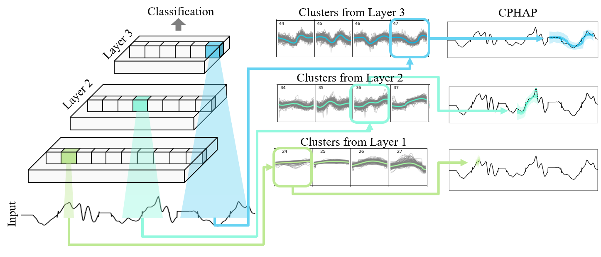
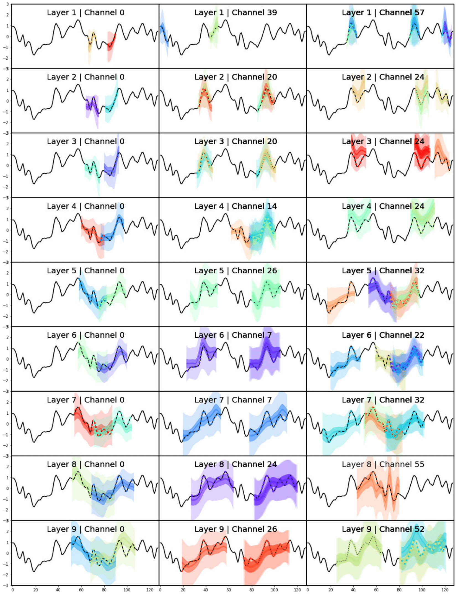
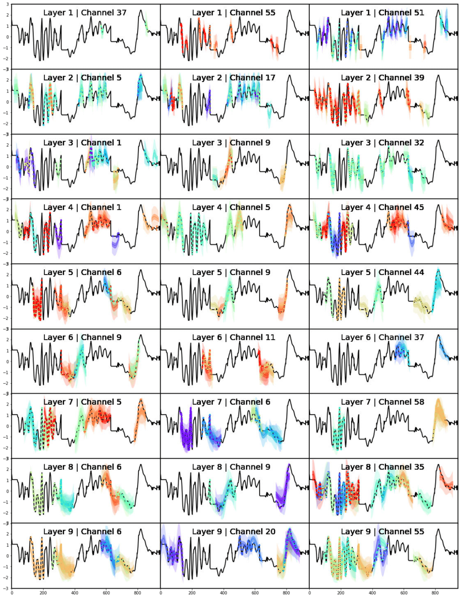
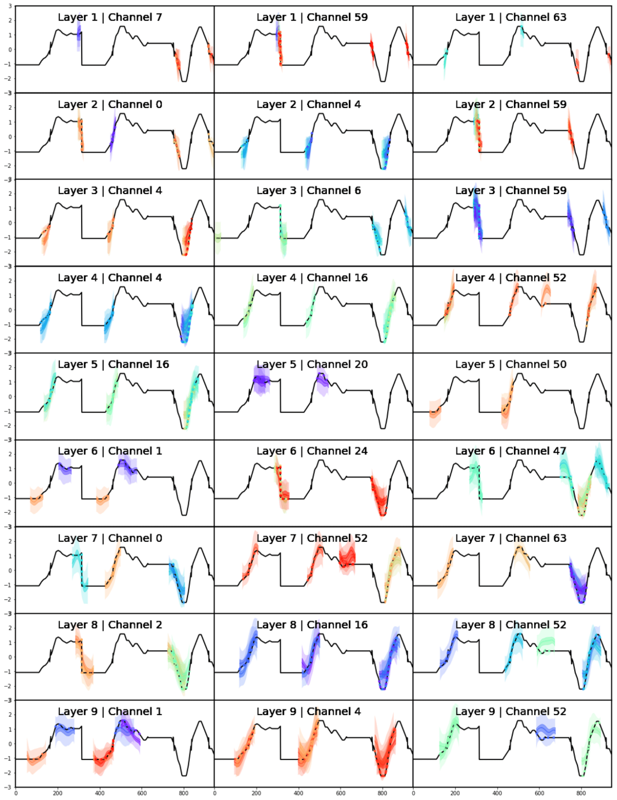
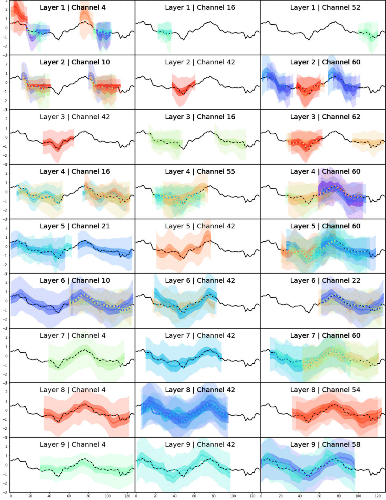
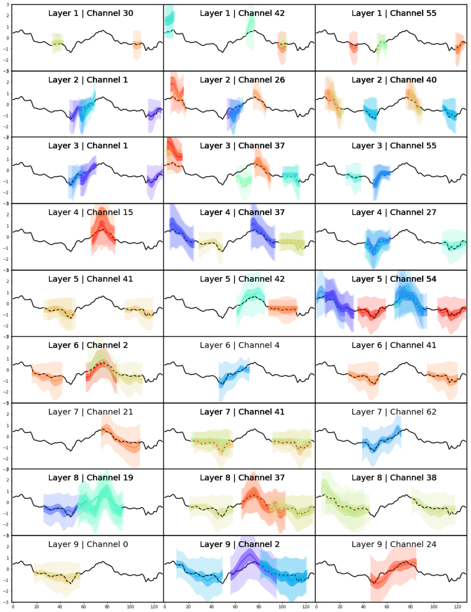
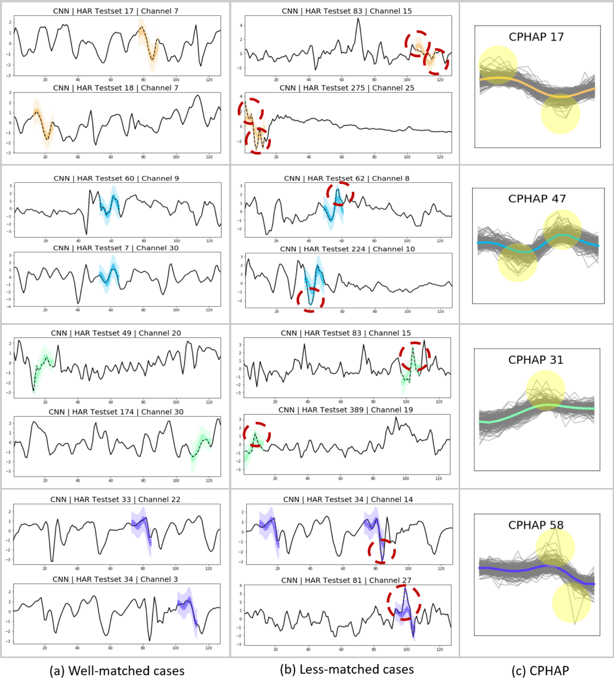
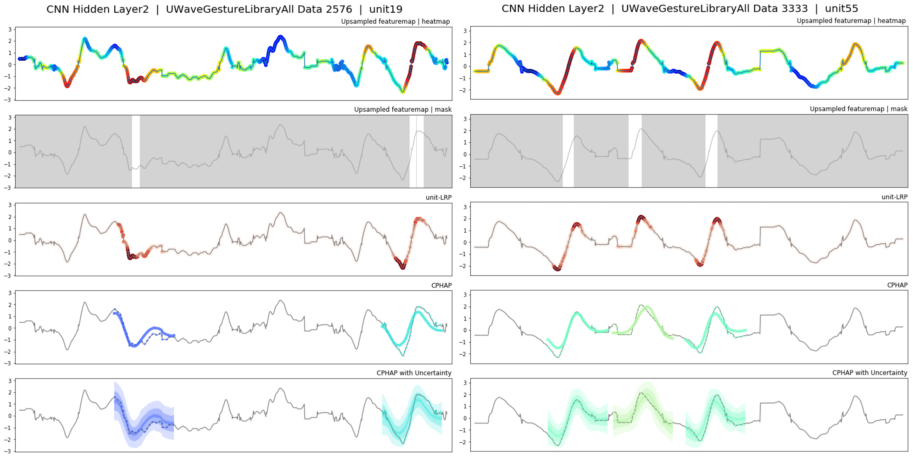

"Interpreting Deep Temporal Neural Networks
by Selective Visualization of Internally Activated Nodes"
Sohee Cho, Ginkyeng Lee, Wonjoon Chang and Jaesik Choi
Recently deep neural networks have demonstrated competitive performance in classification and regression tasks for sequential data. However, it is still hard to understand which temporal patterns the internal channels of deep neural networks see in sequential data. To address this issue, we propose a new framework, CPHAP, to visualize temporal representations learned in deep neural networks without hand-crafted segmentation labels. Our framework extracts highly activated temporal regions and characterizes them as representative temporal patterns. Furthermore, our framework shows the representative temporal pattern with the uncertainty. It enables users to identify whether the input has been observed frequently in the training data. 
Keyword Time Series, Clustering, Input Attribution, Deep Convolution Neural Network.
The patterns detected by channels in different layer have different lengths. Patterns from lower layers, such as layer 1, layer 2, and layer 3, reflect local changes like short concave shapes. On the other hands, patterns from higher layers, such as layer 7, layer 8, and layer 9, capture global changes like slow upward trends.

Channel 55 in layer 1 detects sharp decreasing patterns and Channel 51 detects sharp increasing patterns. In layer 4 and layer 5, the channels can capture more complex and longer patterns than lower layers. For example, channel 6 in layer 5 and channel 45 in layer 4 detect a 'W' shape as a pattern. This kind of complex patterns can be smoothed in the higher layer. Actually, this 'W' shape is detected as a 'U' shape by channel 6 in layer 7.

Given the data sample, channels in lower layers tend to focus on rapid changes or inflection points. For this simple sample, even layer 4 and layer 5 do not capture complex patterns. The channels in the higher layers recognize extreme changes in softer patterns.

The longer convolution filters are, the longer patterns are. The longer filter is appropriate for capturing global trends. If a dataset has complex oscillation, it would be better to use shorter filter in order to detect local features.  
CPHAP works well in the test dataset, which is not used to train the pattern clusters. Figure 9 (1) shows when CPHAP is well matched with new test data. On the other hands, Figure 9 (2) shows examples of less-matched patterns. Note that there are certain points where the actual data deviate from the assigned pattern for each less-matched example. Actually, we can identify that the distribution of each pattern, which is obtained from training dataset, has the large uncertainty on those points in Figure 9 (c). It supports that our framework is valid for capturing uncertainties in sub-sequences that activate specific channels. 
we visually compare CPHAP with other methods that interpret neural networks. Since CAM can interpret only the last layer of CNNs and Network Dissection requires pre-defined concepts (e.g. object, texture, color) in order to explain the internal processes of CNNs, it is hard to directly apply these methods to explain internal activations in neural networks for time-series data. However, we can follow these methods in the similar manner. Both CAM and Network Dissection use the activation map to get the important area and upsample it to map toward the original input size. Inspired by this process, we upsample the channel activation first. Then, we highlight the important area with heatmap like CAM or turn off partial regions where the activation value is under the threshold like Network Dissection. The details of Channel-LRP is described in the Section 4.2 of the main paper. 